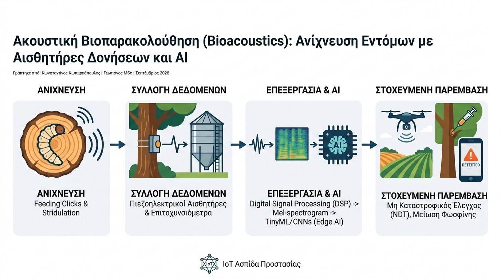

Η έγκαιρη διάγνωση εντομολογικών προσβολών αποτελεί διαχρονικά μια από τις δυσκολότερες προκλήσεις της ολοκληρωμένης φυτοπροστασίας, ιδιαίτερα όταν πρόκειται για ενδοφυτικούς ή κρυπτόβιους εχθρούς. Προνύμφες ξυλοφάγων κολεοπτέρων (όπως τα Cerambycidae και Buprestidae), το καταστροφικό κόκκινο σκαθάρι (Rhynchophorus ferrugineus), αλλά και κοινά έντομα αποθηκών σε σιλό (όπως το Sitophilus granarius), δρουν στο εσωτερικό των φυτικών ιστών ή του όγκου του καρπού χωρίς να γίνονται άμεσα ορατά. Όταν εμφανιστούν τα πρώτα εξωτερικά συμπτώματα, η καταστροφή είναι συχνά μη αναστρέψιμη. Η λύση της σύγχρονης τεχνολογίας έρχεται μέσα από την Ακουστική Βιοπαρακολούθηση (Acoustic Bioacoustics).
Καθώς οι προνύμφες τρέφονται και κινούνται μέσα στο ξύλο ή στους κόκκους των δημητριακών, παράγουν ανεπαίσθητες μηχανικές δονήσεις και ακουστικούς παλμούς (stridulation / feeding clicks). Ειδικοί πιεζοηλεκτρικοί αισθητήρες (piezoelectric sensors) και επιταχυνσιόμετρα επαφής συνδέονται απευθείας στον κορμό του δέντρου ή μέσα στη μάζα των σιτηρών, μετατρέποντας τις μηχανικές ταλαντώσεις σε ψηφιακά ηλεκτρικά σήματα.

Η πρόκληση στο πεδίο έγκειται στον διαχωρισμό των ήχων των εντόμων από τον περιβαλλοντικό θόρυβο (άνεμος, διερχόμενα οχήματα, βροχή). Εδώ ακριβώς επεμβαίνει η Επεξεργασία Σήματος (Digital Signal Processing - DSP) και η Τεχνητή Νοημοσύνη (Machine Learning). Το σήμα μετατρέπεται σε φασματογράφημα (Mel-spectrogram) και τροφοδοτείται σε ελαφρά νευρωνικά δίκτυα (TinyML / CNNs) ενσωματωμένα σε μικροελεγκτές χαμηλής κατανάλωσης (Edge AI). Ο αλγόριθμος αναγνωρίζει τη χαρακτηριστική ακουστική «υπογραφή» της διατροφικής δραστηριότητας του εντόμου με αξιοσημείωτη αξιοπιστία.
Τα επιστημονικά τεκμηριωμένα πλεονεκτήματα της ακουστικής βιοπαρακολούθησης περιλαμβάνουν:
- Μη Καταστροφικός Έλεγχος (Non-Destructive Testing): Η επιτήρηση της υγείας των δένδρων και των αποθηκευμένων καρπών γίνεται αναίμακτα, χωρίς την ανάγκη κοπής κλαδιών, αποφλοίωσης ή καταστροφής δειγμάτων.
- Πρόληψη Πριν την Κατάρρευση: Εντοπισμός του Rhynchophorus ferrugineus ή άλλων ξυλοφάγων σε πρώιμα προνυμφικά στάδια, επιτρέποντας στοχευμένες ενδοθεραπείες (micro-injections) ή εφαρμογή εντομοπαθογόνων νηματωδών.
- Δραστική Μείωση Υπολειμμάτων: Αποφυγή προληπτικών καθολικών υποκαπνισμών (fumigation) σε αποθήκες σιτηρών, περιορίζοντας τη χρήση τοξικών αερίων (π.χ. φωσφίνη) μόνο στα σημεία επιβεβαιωμένης προσβολής.
Η ενσωμάτωση της ακουστικής τεχνολογίας σε αυτόνομα δίκτυα IoT μετατρέπει την εντομολογική παρακολούθηση σε μια συνεχή, «αόρατη» ασπίδα προστασίας. Για τον σύγχρονο γεωπόνο, η δυνατότητα να «ακούει» τις διεργασίες μέσα στον ιστό του φυτού παρέχει το απόλυτο εργαλείο ακριβείας για έγκαιρη παρέμβαση και ουσιαστική προστασία του αγροτικού κεφαλαίου.